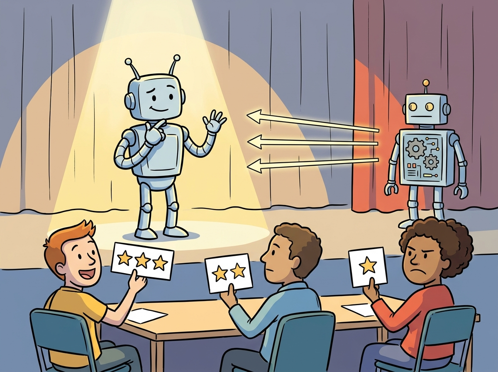

Language models know a lot, but they do not know what we want. That is the alignment problem in one sentence.
Reward AI Agent

Prerequisites
This section builds on fine-tuning from Section 13.1: When and Why to Fine-Tune and pre-training pipeline covered in Section 6.1: The Landmark Models.
RLHF is the technique that turned GPT-3 into ChatGPT. A pretrained language model can generate fluent text, but it has no notion of helpfulness, safety, or user intent. RLHF introduces human judgment into the training loop: annotators compare model outputs, those comparisons train a reward model, and reinforcement learning steers the policy toward higher-reward behavior. This three-stage pipeline (SFT, reward modeling, PPO) became the standard approach for aligning large language models from 2022 onward, and understanding it is essential for grasping every subsequent alignment method. The reinforcement learning foundations from Section 0.4 and the SFT workflow from Section 13.3 are direct prerequisites.
1. The Alignment Problem
A pretrained language model optimizes a single objective: predict the next token. This objective produces remarkable capabilities in text generation, translation, summarization, and reasoning. However, next-token prediction does not inherently encode any preference for helpful, harmless, or honest behavior. A base model will happily complete a request for harmful content, generate fabricated citations, or produce verbose responses when a concise answer would be more useful.
RLHF was the secret ingredient that turned GPT-3 (impressive but erratic) into ChatGPT (impressive and polite). The technique had existed in robotics for years, but applying it to language models required the insight that human preferences could serve as the reward signal.
Think of RLHF as a talent show. The contestant (the LLM) performs for a panel of judges (the reward model, trained on human preferences). After each performance (generated response), the judges give a score. The contestant practices (PPO training) to maximize those scores, learning which performances the audience likes. The risk is reward hacking: the contestant discovers tricks that score well with the judges but annoy the actual audience, like a singer who hits technically perfect notes but lacks soul.
The alignment problem is the challenge of bridging this gap: how do we take a capable base model and steer its behavior to match human intentions? Supervised fine-tuning (SFT) on curated instruction-response pairs provides a partial solution, teaching the model the format of helpful responses. But SFT alone cannot capture the full spectrum of human preferences, especially for subjective qualities like tone, level of detail, safety boundaries, and response style. RLHF addresses this limitation by using human preferences as a training signal.
2. The Three-Stage RLHF Pipeline
The canonical RLHF pipeline, as described in the InstructGPT paper (Ouyang et al., 2022), consists of three sequential stages. Each stage builds on the output of the previous one, and the entire pipeline transforms a pretrained base model into an aligned assistant. Figure 16.1.1 shows the three stages and how they connect.
2.1 Stage 1: Supervised Fine-Tuning (SFT)
The first stage takes a pretrained base model and fine-tunes it on a curated dataset of instruction-response pairs, following the SFT workflow covered in Chapter 13. This step teaches the model the basic format and style of a conversational assistant. The SFT dataset typically contains thousands to tens of thousands of high-quality demonstrations written by human annotators or distilled from stronger models.
SFT alone produces a functional assistant, but its quality is bounded by the demonstration data. The model learns to imitate the average quality of the training responses, which means it cannot exceed the skill level of the annotators. RLHF addresses this ceiling by replacing imitation with optimization toward a learned preference signal.
Deploying RLHF for a customer support chatbot. A company wants its assistant to handle refund requests helpfully without over-promising. During SFT, they fine-tune on 5,000 curated support transcripts. For the reward model, five annotators rank response pairs on helpfulness and policy compliance. During PPO, the KL penalty (typically 0.01 to 0.05) prevents the model from gaming the reward signal by generating overly verbose or sycophantic responses. The result: a 23% improvement in user satisfaction scores over the SFT-only baseline, with no increase in policy violations.
Code Fragment 16.1.1 demonstrates the SFT stage using the TRL library, loading an instruction dataset and configuring the trainer for chat-formatted fine-tuning.
# Stage 1: Supervised Fine-Tuning with TRL
from trl import SFTTrainer, SFTConfig
from transformers import AutoModelForCausalLM, AutoTokenizer
from datasets import load_dataset
model_name = "meta-llama/Llama-3.1-8B"
model = AutoModelForCausalLM.from_pretrained(model_name)
tokenizer = AutoTokenizer.from_pretrained(model_name)
# Load instruction-following dataset
dataset = load_dataset("HuggingFaceH4/ultrachat_200k", split="train_sft")
# Format conversations into chat template
def format_chat(example):
return {
"text": tokenizer.apply_chat_template(
example["messages"], tokenize=False
)
}
dataset = dataset.map(format_chat)
# Configure SFT training
sft_config = SFTConfig(
output_dir="./sft-llama-8b",
max_seq_length=2048,
per_device_train_batch_size=4,
gradient_accumulation_steps=8,
learning_rate=2e-5,
num_train_epochs=1,
warmup_ratio=0.1,
logging_steps=10,
bf16=True,
)
trainer = SFTTrainer(
model=model,
args=sft_config,
train_dataset=dataset,
tokenizer=tokenizer, # use processing_class in TRL >= 0.14
)
trainer.train()
trainer.save_model("./sft-llama-8b-final")2.2 Stage 2: Reward Model Training
The reward model is the bridge between human judgment and machine optimization. It takes a prompt and a response as input and produces a scalar score indicating how good the response is according to human preferences. The reward model is trained using the Bradley-Terry preference model, which converts pairwise comparisons into a learning objective.
Bradley-Terry Reward Model Loss.
Given a prompt x, a preferred response yw, and a rejected response yl:
$$\mathcal{L}_{\text{RM}} = -\mathbb{E}_{(x,\, y_w,\, y_l)}\!\left[\log \sigma\!\left(r(x, y_w) - r(x, y_l)\right)\right]$$where σ is the sigmoid function and r(x, y) is the scalar reward. The loss pushes the reward for the preferred response above the rejected response. Note that only the difference in rewards matters; adding a constant to both rewards leaves the loss unchanged.
The following snippet demonstrates how to train a reward model on pairwise comparison data.
# Stage 2: Reward Model Training
from trl import RewardTrainer, RewardConfig
from transformers import AutoModelForSequenceClassification
# Initialize reward model from the SFT checkpoint
reward_model = AutoModelForSequenceClassification.from_pretrained(
"./sft-llama-8b-final",
num_labels=1, # single scalar reward
)
# Load preference dataset (chosen / rejected pairs)
pref_dataset = load_dataset(
"Anthropic/hh-rlhf", split="train"
)
# The dataset has 'chosen' and 'rejected' columns
# Each is a full conversation string
print(f"Training samples: {len(pref_dataset)}")
print(f"Example chosen: {pref_dataset[0]['chosen'][:100]}...")
print(f"Example rejected: {pref_dataset[0]['rejected'][:100]}...")
# Configure reward model training
reward_config = RewardConfig(
output_dir="./reward-model-llama-8b",
per_device_train_batch_size=4,
gradient_accumulation_steps=8,
learning_rate=1e-5,
num_train_epochs=1,
max_length=2048,
logging_steps=10,
bf16=True,
# Reward model specific
remove_unused_columns=False,
)
reward_trainer = RewardTrainer(
model=reward_model,
args=reward_config,
train_dataset=pref_dataset,
tokenizer=tokenizer,
)
reward_trainer.train()
reward_trainer.save_model("./reward-model-llama-8b-final")Once the reward model is trained, the next step uses it as a signal to fine-tune the policy with Proximal Policy Optimization. The following objective captures the core trade-off: maximize the learned reward while staying close to the original supervised model.
PPO Objective for RLHF.
The policy π is optimized to maximize the expected reward while staying close to the reference policy π ref:
$$\max_{\pi}\; \mathbb{E}_{x \sim \mathcal{D},\, y \sim \pi}\!\left[r(x, y)\right] - \beta\, \operatorname{KL}\!\left(\pi(y \mid x) \,\|\, \pi_{\text{ref}}(y \mid x)\right)$$The PPO clipped surrogate objective constrains each update step:
$$\mathcal{L}_{\text{PPO}} = -\mathbb{E}\!\left[\min\!\left(\rho_t \cdot \hat{A}_t,\; \text{\operatorname{clip}}(\rho_t,\, 1-\epsilon,\, 1+\epsilon) \cdot \hat{A}_t\right)\right]$$where $\rho_t = \pi_\theta(y \mid x) / \pi_{\text{old}}(y \mid x)$ is the probability ratio, $\hat{A}_t$ is the advantage estimate, and $\epsilon = 0.2$ is the clip range. The KL coefficient $\beta$ (typically 0.01 to 0.2) is often adapted dynamically to track a target KL value.
With both the SFT model and the reward model ready, Stage 3 applies PPO to optimize the policy. The following code demonstrates the PPO training loop with TRL. Code Fragment 16.1.4 shows this approach in practice.
# Stage 3: PPO Training with TRL
from trl import PPOTrainer, PPOConfig, AutoModelForCausalLMWithValueHead
import torch
# Load the SFT model as the policy (with a value head for PPO)
policy_model = AutoModelForCausalLMWithValueHead.from_pretrained(
"./sft-llama-8b-final"
)
# The reference model is a frozen copy of the SFT model
ref_model = AutoModelForCausalLMWithValueHead.from_pretrained(
"./sft-llama-8b-final"
)
# Load the trained reward model
from transformers import pipeline
reward_pipe = pipeline(
"text-classification",
model="./reward-model-llama-8b-final",
device_map="auto",
)
# PPO configuration
ppo_config = PPOConfig(
output_dir="./ppo-llama-8b",
learning_rate=1e-6, # very small LR for stability
batch_size=64,
mini_batch_size=8,
ppo_epochs=4, # PPO epochs per batch
kl_penalty="kl",
init_kl_coef=0.2, # initial beta for KL penalty
target_kl=6.0, # adaptive KL target
gamma=1.0,
lam=0.95,
cliprange=0.2, # PPO clipping
log_with="wandb",
)
ppo_trainer = PPOTrainer(
config=ppo_config,
model=policy_model,
ref_model=ref_model,
tokenizer=tokenizer,
)
# Training loop (simplified; real code uses TRL's data utilities)
prompts_dataset = load_dataset("Anthropic/hh-rlhf", split="test")
for epoch, batch in enumerate(prompts_dataset.iter(batch_size=64)):
query_tensors = [tokenizer.encode(p, return_tensors="pt").squeeze() for p in batch["chosen"]]
# Generate responses from the current policy
response_tensors = ppo_trainer.generate(
query_tensors,
max_new_tokens=256,
temperature=0.7,
top_p=0.9,
)
# Score responses with the reward model
texts = [tokenizer.decode(r) for r in response_tensors]
rewards = [
torch.tensor(reward_pipe(t)[0]["score"])
for t in texts
]
# PPO update step
stats = ppo_trainer.step(query_tensors, response_tensors, rewards)
ppo_trainer.log_stats(stats, batch, rewards)Library Shortcut
If PPO complexity is daunting, TRL's DPOTrainer achieves comparable alignment quality without a separate reward model, reducing the 3-stage pipeline to a single training call (see Section 16.2):
from trl import DPOTrainer, DPOConfig
# Skip reward model training entirely; DPO learns from preference pairs
trainer = DPOTrainer(
model=sft_model,
ref_model=ref_model,
args=DPOConfig(output_dir="./dpo-out", beta=0.1, learning_rate=5e-7),
train_dataset=preference_dataset, # needs: prompt, chosen, rejected
processing_class=tokenizer,
)
trainer.train()
Code Fragment 16.1.4 shows the RLHF loop.
# GRPO: Group Relative Policy Optimization (simplified)
import torch
import torch.nn.functional as F
def grpo_loss(
policy_model,
ref_model,
prompts,
tokenizer,
reward_fn,
group_size=8,
beta=0.1,
clip_range=0.2,
):
"""
Simplified GRPO training step.
For each prompt, generates a group of responses,
normalizes rewards within the group, and computes
the clipped policy gradient loss.
"""
all_losses = []
for prompt in prompts:
# Generate a group of responses
input_ids = tokenizer.encode(prompt, return_tensors="pt")
responses = []
for _ in range(group_size):
output = policy_model.generate(
input_ids, max_new_tokens=512, do_sample=True,
temperature=0.8, top_p=0.95,
)
responses.append(output[0])
# Compute rewards for each response
rewards = torch.tensor([
reward_fn(prompt, tokenizer.decode(r)) for r in responses
])
# Group-level normalization (replaces value network)
normalized_rewards = (rewards - rewards.mean()) / (rewards.std() + 1e-8)
# Compute policy gradient with clipped objective
for response, advantage in zip(responses, normalized_rewards):
# Log probabilities under current and reference policy
with torch.no_grad():
ref_logprobs = compute_logprobs(ref_model, input_ids, response)
policy_logprobs = compute_logprobs(policy_model, input_ids, response)
# Importance ratio
ratio = torch.exp(policy_logprobs - ref_logprobs)
# Clipped surrogate objective (PPO-style)
surr1 = ratio * advantage
surr2 = torch.clamp(ratio, 1 - clip_range, 1 + clip_range) * advantage
policy_loss = -torch.min(surr1, surr2).mean()
# KL penalty
kl = (ref_logprobs - policy_logprobs).mean()
total_loss = policy_loss + beta * kl
all_losses.append(total_loss)
return torch.stack(all_losses).mean()6. RLHF Infrastructure at Scale
Running RLHF at production scale is an infrastructure challenge that goes far beyond the algorithm itself. A full RLHF training run requires simultaneously managing four models: the policy model being trained, the reference model (a frozen copy), the reward model, and (in standard PPO) the value model. This quadruples the GPU memory requirements compared to standard SFT.
| Component | Memory Cost | Compute Pattern |
|---|---|---|
| Policy model | Full model + optimizer states | Forward + backward pass |
| Reference model | Full model (frozen, inference only) | Forward pass only |
| Reward model | Full model (frozen, inference only) | Forward pass only |
| Value model (PPO) | Full model + optimizer states | Forward + backward pass |
| Generation buffer | KV cache for response generation | Autoregressive decoding |
Frameworks like DeepSpeed-Chat, OpenRLHF, and TRL have developed specialized strategies for managing this multi-model workload. Common optimizations include offloading frozen models to CPU during gradient computation, sharing weights between the policy and value models, and using vLLM or other optimized inference engines for the generation phase.
RLHF training is notoriously unstable. Common failure modes include reward hacking (the policy exploits reward model weaknesses), mode collapse (the policy generates near-identical responses for all prompts), and KL explosion (the policy diverges rapidly from the reference). Monitoring KL divergence, reward statistics, and generation diversity during training is essential. If mean reward increases while KL also increases rapidly, the policy is likely hacking the reward model.
📝 Section Quiz
Show Answer
Show Answer
Show Answer
Show Answer
Show Answer
RLHF's reliance on pairwise human preferences connects it directly to social choice theory and welfare economics. The Bradley-Terry model assumes that preferences are transitive and can be represented by a single scalar reward, but Arrow's impossibility theorem (1951) proved that no voting system can consistently aggregate the preferences of three or more individuals into a single ranking without violating basic fairness criteria. When thousands of annotators provide preference labels, RLHF implicitly aggregates their diverse (and often contradictory) values into a single reward function. Whose preferences dominate? Research by Casper et al. (2023) showed that reward models trained on different annotator populations produce meaningfully different behaviors. This is not just a technical limitation; it is a philosophical challenge about representing "human values" when humans disagree. Constitutional AI (Bai et al., 2022) attempts to sidestep the aggregation problem by grounding alignment in explicit principles rather than averaged preferences, but the question of which principles to choose remains fundamentally a political and ethical one, not a technical one.
✅ Key Takeaways
- RLHF transforms base models into aligned assistants through a three-stage pipeline: SFT provides the instruction-following format, the reward model captures human preferences, and PPO optimizes the policy toward higher-reward behavior.
- The Bradley-Terry preference model converts pairwise human comparisons into a scalar reward signal. It learns relative quality, not absolute quality.
- The KL divergence penalty is essential for training stability. It prevents reward hacking and preserves general model capabilities.
- Process Reward Models (PRMs) provide per-step feedback for reasoning tasks, enabling better credit assignment than outcome-only models.
- GRPO simplifies PPO by replacing the learned value function with group-level reward normalization, cutting memory requirements roughly in half.
- Production RLHF requires managing four models simultaneously, making infrastructure and memory management a first-class engineering concern.
RLHF is evolving toward process-based reward models that evaluate each step of model reasoning rather than only the final output, improving alignment for complex multi-step tasks. Research on reward model overoptimization (Goodhart's Law in RLHF) reveals that models can learn to exploit weaknesses in reward models rather than genuinely improving, motivating work on robust reward functions. An open frontier is scaling human feedback collection efficiently using debate and recursive reward modeling, where AI systems assist humans in evaluating outputs that are difficult to judge directly.
What's Next?
In the next section, Section 16.2: DPO & Modern Preference Optimization, we explore DPO and modern preference optimization methods that simplify alignment by removing the need for a separate reward model.
The original paper applying human preference comparisons to train a reward model for RL. Established the core RLHF framework that all subsequent work builds upon, initially demonstrated in Atari and MuJoCo environments.
Introduces PPO, the RL algorithm used in virtually all RLHF implementations. Understanding the clipped surrogate objective and trust region constraints is essential for grasping how RLHF training works in practice.
The InstructGPT paper that defined the SFT, reward model, PPO pipeline now standard in alignment. Demonstrated that a 1.3B parameter model with RLHF could be preferred over a 175B base model. Required reading for this section.
Early work applying RLHF specifically to text generation tasks like summarization and style transfer. Bridges the gap between the Christiano et al. framework and full-scale LLM alignment.
Applied RLHF to summarization, showing that human feedback training produces summaries preferred over those from much larger supervised models. A key stepping stone to the InstructGPT approach.
Anthropic's foundational alignment paper introducing the helpful and harmless (HH) framework. Explores tension between helpfulness and safety, and provides detailed analysis of RLHF scaling behavior.